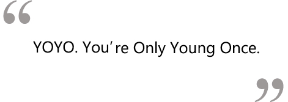

Social Chair: Kristin Soriano

Nicknames: Kris, tintin, pinto
Year: Senior
Major: Psychology
Minor: Education
Favorite childhood movie? Titanic. The Brave Little Toaster. FernGully.
If you were a certain type of food, what would you be? Vietnamese food. DIY spring rolls. Binh Minh Quan.
Most Visited Websites: Youtube. bearfacts. thebeautydepartment
What do you see yourself doing after college? Controlling the public health policies of the world. In style.
What do you like to do on your free time? Run, pretend to be artsy.. uhh
If you had one song to describe you as a person, what would it be and why? Christine - Siouxsie and the Banshees. Look up the lyrics.
If you had 24 hours to live, what would you do? Blow my money on a trip with my family to somewhere tropical like Hawaii.